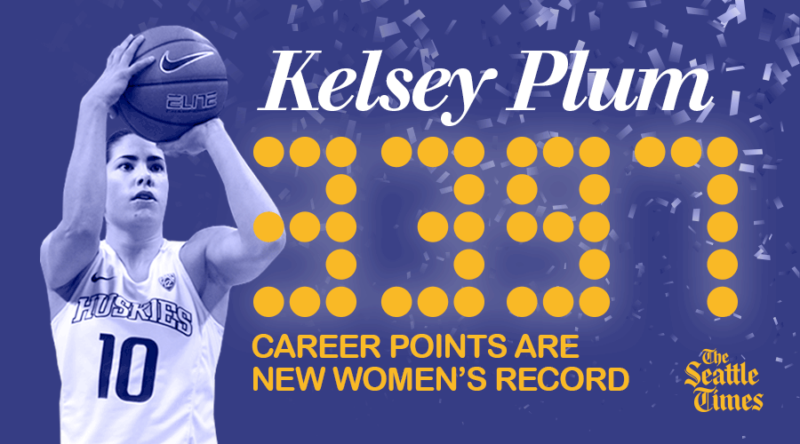

Kelsey Plum put on a hellacious offensive display in her senior season, capping a historic career and passing some iconic female college basketball players. Plum's 57-point display against Utah made her the No. 1 all-time scorer in NCAA women's basketball, passing Jackie Stiles' previous record. In four postseason games, Plum added another 130 points, solidifying her spot atop the all-time scorers list and breaking Stiles' single-season scoring record. Here's a look at how Plum stacks up among the all-time greats.
| Name | Record | Year | Games |
|---|---|---|---|
|
Kelsey Plum
UW
| 3,527 | 2017 | 141 <% json.scorers.forEach(function(row) { %> |
| <%= row.name %>
<%= row.school %>
| <%= t.formatNumber(row.points) %> | <%= row.year %> | <%= row.games %> <% }) %> |
- Production: Sean Quinton, Evan Webeck
- Development: Thomas Wilburn